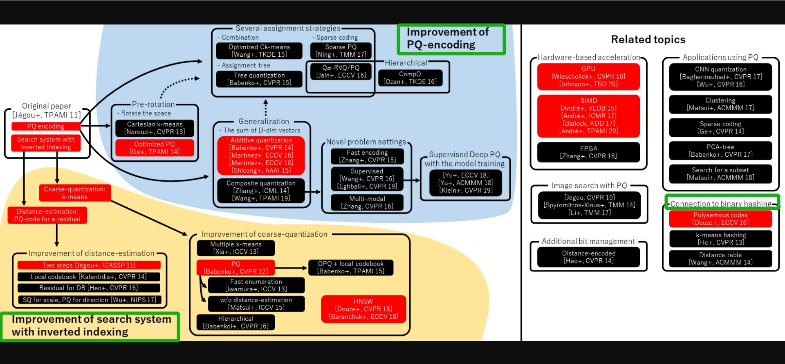
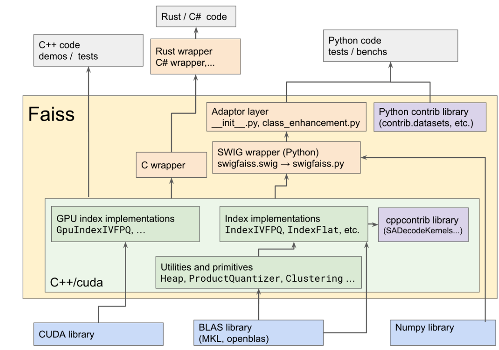
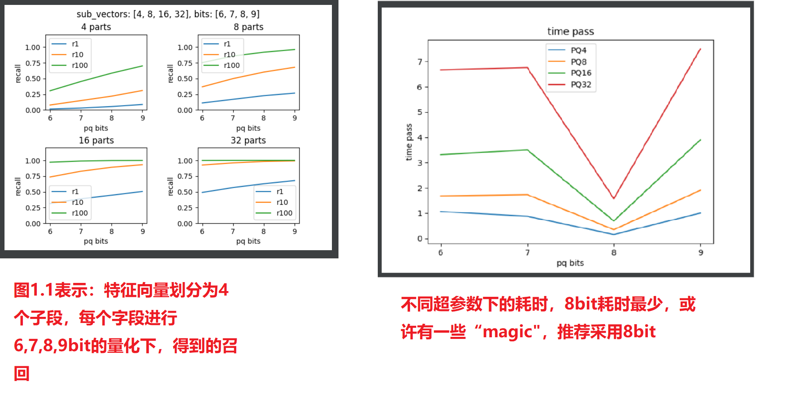
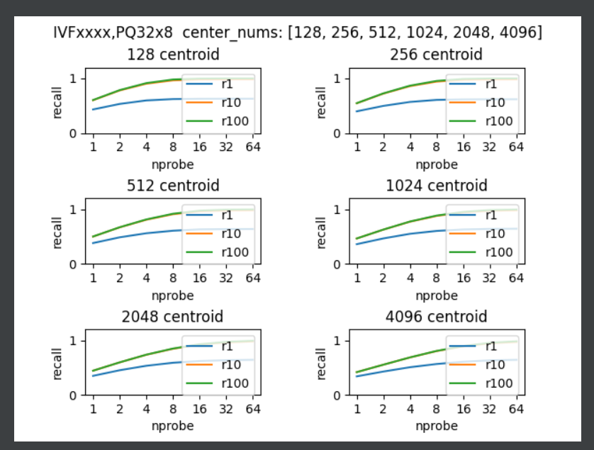
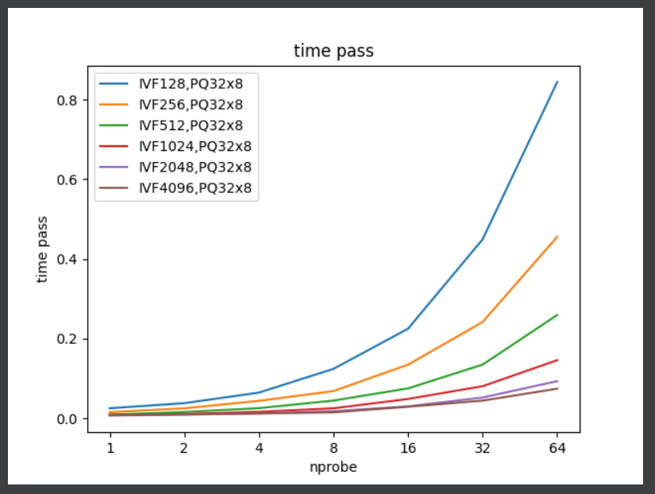
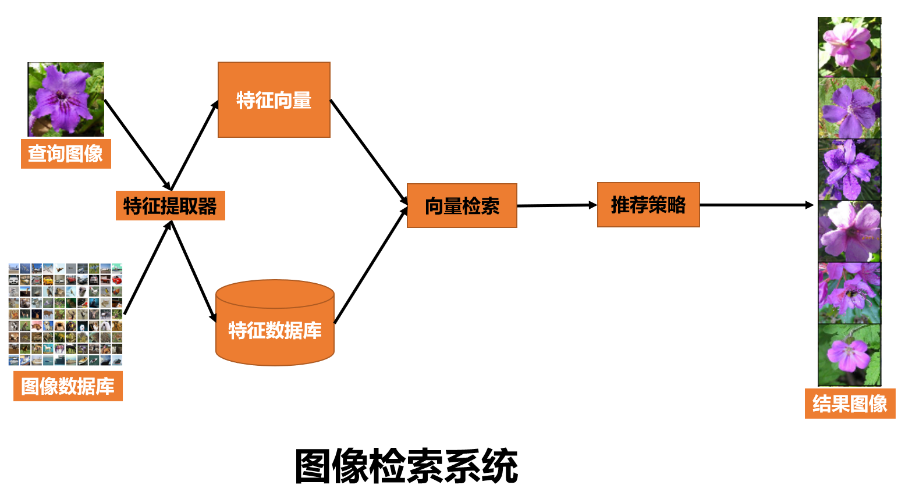
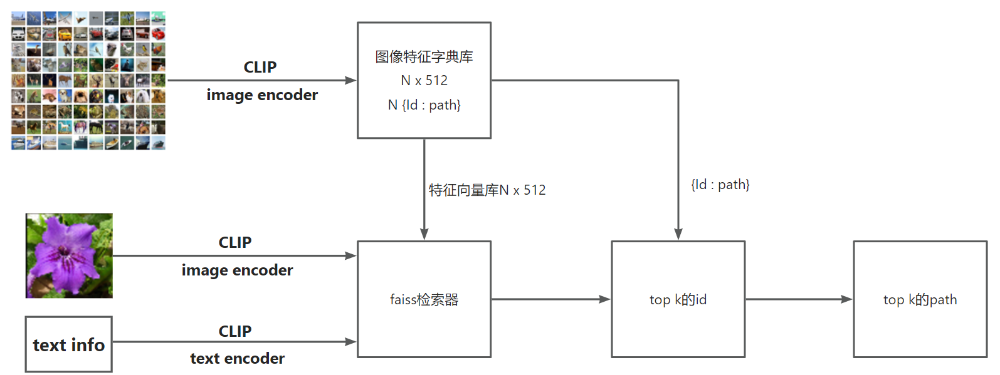
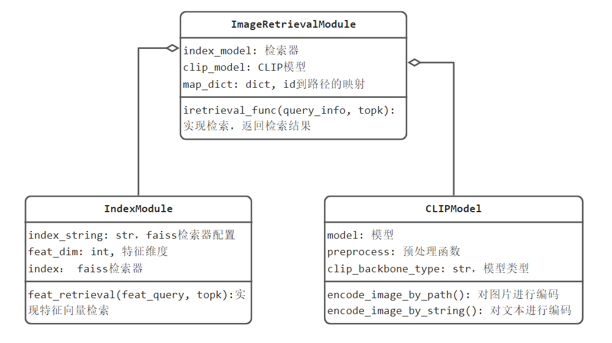
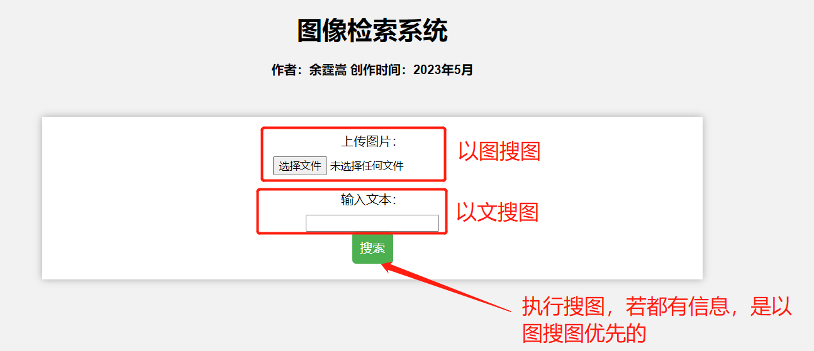

8.8 Image Retrieval 图像检索 （下）
前言
上一小节，对图像检索的基础概念进行了介绍，本节将通过代码实践，实现以文搜图、以图搜图的功能。
本节代码核心包括：
- Faiss 框架介绍及常用算法评估，并基于Faiss实现COCO 2017的11万数据的图像检索
- CLIP实现image/text的特征提取
- 集成Faiss+CLIP构建无需训练的图像检索系统
- 基于Flask将图像检索系统部署为web服务
Faiss安装及使用
简介
Faiss是MetaAI开源的高性能向量检索库，它基于C++编写，提供python接口，核心模块还可以用GPU加速，在亿级数据可在xxx秒级实现结果返回，目前应用较为广泛。中小型项目及个人，非常适合采用Faiss。
Faiss目前最好的学习资源有两个，一个是官方wiki，一个是www.pinecone.io的Faiss: The Missing Manual
faiss提供的优化算法主要分为PQ量化和倒排索引，下图为faiss中算法体系结构图，可以看到核心在蓝色区域和黄色区域。

安装
可以通过pip或者conda安装，这里推荐conda，这里需要注意镜像源最好conda源，若是清华镜像是行不通的。
# cpu版本安装
conda install -c pytorch faiss-cpu
# gpu版本安装
conda install -c pytorch faiss-gpu
切换回到conda官方源方法：
# 依次输入
conda config --remove-key channels
conda config --add channels defaults
conda config --add channels conda-forge
在这里安装了gpu版本，便于测试，在gpu版本安装中，会默认装上cudatoolkit， 600多M，总共需要900多M
The following packages will be downloaded:
package | build
---------------------------|-----------------
ca-certificates-2022.12.7 | h5b45459_0 143 KB conda-forge
cudatoolkit-11.8.0 | h09e9e62_11 638.9 MB conda-forge
faiss-1.7.2 |py38cuda112h7f1466e_3_cuda 885 KB conda-forge
faiss-gpu-1.7.2 | h949689a_3 15 KB conda-forge
intel-openmp-2023.1.0 | h57928b3_46319 2.5 MB conda-forge
libblas-3.9.0 | 16_win64_mkl 5.6 MB conda-forge
libcblas-3.9.0 | 16_win64_mkl 5.6 MB conda-forge
libfaiss-1.7.2 |cuda112h33bf9e0_3_cuda 51.0 MB conda-forge
libfaiss-avx2-1.7.2 |cuda112h1234567_3_cuda 51.1 MB conda-forge
libhwloc-2.9.1 | h51c2c0f_0 2.4 MB conda-forge
libiconv-1.17 | h8ffe710_0 698 KB conda-forge
liblapack-3.9.0 | 16_win64_mkl 5.6 MB conda-forge
libxml2-2.10.4 | hc3477c8_0 1.7 MB conda-forge
libzlib-1.2.13 | hcfcfb64_4 70 KB conda-forge
mkl-2022.1.0 | h6a75c08_874 182.7 MB conda-forge
numpy-1.24.2 | py38h7ec9225_0 5.6 MB conda-forge
openssl-1.1.1t | hcfcfb64_0 5.0 MB conda-forge
pthreads-win32-2.9.1 | hfa6e2cd_3 141 KB conda-forge
python_abi-3.8 | 2_cp38 4 KB conda-forge
setuptools-67.6.1 | pyhd8ed1ab_0 567 KB conda-forge
tbb-2021.9.0 | h91493d7_0 151 KB conda-forge
ucrt-10.0.22621.0 | h57928b3_0 1.2 MB conda-forge
vs2015_runtime-14.34.31931 | h4c5c07a_10 708 KB conda-forge
------------------------------------------------------------
Total: 962.3 MB
安装验证——"Hello Faiss"
接下来采用faiss进行精确查找，实现10000条查询向量的top-4向量检索。
faiss使用步骤主要分三步：
- 创建索引器，索引器有FlatL2、LSH、PQ、HNSWFlat等
- 初始化索引器，将数据库向量添加到索引器中，并进行预训练（如果需要）
- 使用索引器进行检索。
以下为配套代码运行结果
import time
import numpy as np
import faiss
# ============================ step 0: 数据构建 ============================
np.random.seed(1234)
d = 64 # dimension
nb = 100000 # database size
nq = 10000 # nb of queries
xb = np.random.random((nb, d)).astype('float32')
xq = np.random.random((nq, d)).astype('float32')
xb[:, 0] += np.arange(nb) / 1000.
xq[:, 0] += np.arange(nq) / 1000.
# ============================ step 1: 构建索引器 ============================
index = faiss.IndexFlatL2(d)
index.add(xb)
# ============================ step 2: 索引 ============================
k = 4 # top_k number
for i in range(5):
s = time.time()
D, I = index.search(xq, k)
print("{}*{}量级的精确检索，耗时:{:.3f}s".format(nb, nq, time.time()-s))
# ============================ step 3: 检查索引结果 ============================
print('D.shape: {}, D[0, ...]: {}'.format(D.shape, D[0]))
print('I.shape: {}, I[0, ...]: {}'.format(I.shape, I[0]))
# D是查询向量与topk向量的距离，distance
# I是与查询向量最近的向量的id，此处有10万数据，index在0-99999之间。
输出的D表示距离， 6.815表示第一个查询向量的top-1向量的距离是6.815
输出的I表示向量id， 381表示第一个查询向量的top-1向量的id是381
D.shape: (10000, 4), D[0, ...]: [6.815506 6.8894653 7.3956795 7.4290257]
I.shape: (10000, 4), I[0, ...]: [381 207 210 477]
faiss提供的方法汇总表如下：
| Method | Class name | index_factory | Main parameters | Bytes/vector | Exhaustive | Comments |
|---|---|---|---|---|---|---|
| Exact Search for L2 | IndexFlatL2 | "Flat" | d | 4*d | yes | brute-force |
| Exact Search for Inner Product | IndexFlatIP | "Flat" | d | 4*d | yes | also for cosine (normalize vectors beforehand) |
| Hierarchical Navigable Small World graph exploration | IndexHNSWFlat | 'HNSWx,Flat` | d,M | 4d + x M 2 4 | no | |
| Inverted file with exact post-verification | IndexIVFFlat | "IVFx,Flat" | quantizer,d,nlists,metric | 4*d + 8 | no | Takes another index to assign vectors to inverted lists. The 8 additional bytes are the vector id that needs to be stored. |
| Locality-Sensitive Hashing (binary flat index) | IndexLSH | - | d,nbits | ceil(nbits/8) | yes | optimized by using random rotation instead of random projections |
| Scalar quantizer (SQ) in flat mode | IndexScalarQuantizer | "SQ8" | d | d | yes | 4 and 6 bits per component are also implemented. |
| Product quantizer (PQ) in flat mode | IndexPQ | "PQx","PQ"x"x"nbits | d,M,nbits | ceil(M * nbit / 8) | yes | |
| IVF and scalar quantizer | IndexIVFScalarQuantizer | "IVFx,SQ4" "IVFx,SQ8" | quantizer,d,nlists,qtype | SQfp16: 2 *d+ 8, SQ8:d+ 8 or SQ4:d/2+ 8 | no | Same as theIndexScalarQuantizer |
| IVFADC (coarse quantizer+PQ on residuals) | IndexIVFPQ | "IVFx,PQ"y"x"nbits | quantizer,d,nlists,M,nbits | ceil(M * nbits/8)+8 | no | |
| IVFADC+R (same as IVFADC with re-ranking based on codes) | IndexIVFPQR | "IVFx,PQy+z" | quantizer,d,nlists,M,nbits,M_refine,nbits_refine | M+M_refine+8 | no |
faiss 基础
相似性评价指标
faiss的评价指标主要有L2 和 inner product，L2是平方后的L2，这是为了减少计算量，只是比较大小，就没必要开平方了，需要真正意义的L2，要自行开平方。
除了L2和inner product，还有METRIC_L1, METRIC_Linf and METRIC_Lp ，但不常用，需要时查看官方wiki文档。
faiss的数据预处理
faiss提供了高性能的 k-means clustering, PCA, PQ encoding/decoding，需要用时查看wiki
索引器太多，如何选？
- RAM充足：选HNSW，IVF1024,PQNx4fs,RFlat
- RAM一般：OPQ M _D ,...,PQ M x 4fsr
- RAM不足：OPQM _D ,...,PQM
- 数据量不大，且要求精确：选 IndexFlatL2 或 IndexFlatIP
- 数据量大：IVF K, K可以选择256，2^16=65536， 2^18=262144， 2^20=1048576，根据数据量在1M, 10M, 100M, 1B之间选择。
综上：内存问题用量化，速度问题用倒排，一个普适的方法是 IVF + PQ。
faiss预处理及后处理
预处理方法：
- random rotation， RandomRotationMatrix， useful to re-balance components of a vector before indexing in an IndexPQ or IndexLSH
- remapping of dimensions， RemapDimensionsTransform， to reduce or increase the size of a vector because the index has a preferred dimension, or to apply a random permutation on dimensions.
- PCA, PCAMatrix, for dimensionality reduction ,
- OPQ rotation, OPQMatrix, OPQ applies a rotation to the input vectors to make them more amenable to PQ coding. See Optimized product quantization, Ge et al., CVPR'13 for more details.
后处理方法：
- re-ranking：IndexRefineFlat，基于距离的重排，利用近似检索获得的结果精度可能较低，可通过距离进行重排。
- IndexShards：组合多个索引器的结果，或是多gpu并行结果的融合。
index factory
faiss提供了基于字符串创建索引器的工厂函数，字符串以逗号分隔，可以一次性创建复合的索引器，包括预处理、索引、后处理等。
举例：
- index = index_factory(128, "PCA80,Flat") ：为 128维 向量生成一个索引，通过 PCA 将它们减少到 80维，然后进行精确索引。
- index = index_factory(128, "OPQ16_64,IMI2x8,PQ8+16")：输入是128维度 向量，再将 OPQ 变换应用于 64D 中的 16 个块，再使用 2x8 位的反向多索引（= 65536 个反向列表），最后使用大小为 8 的 PQ 进行量化16 字节。
索引数据的I/O
数据库的索引信息通常需要存于磁盘，再读入内存，这时候需要读取I/O方法。
write_index(index, "large.index"): writes the given index to file large.index
index = read_index("large.index"): reads a file
GPU 使用
faiss提供核心索引器的gpu加速，可以将数据放到gpu上进行加速运算，使用比较方便，只需要以下三步：先获取gpu资源、创建cpu的索引器、cpu索引器搬到gpu上。
注意：PQ不支持gpu加速，IVFPQ才支持。GPU: only pq.nbits == 8 is supported
res = faiss.StandardGpuResources() # 1. 获取gpu资源
index_flat = faiss.IndexFlatL2(d) # 2. 创建cpu索引器
gpu_index_flat = faiss.index_cpu_to_gpu(res, 0, index_flat) # 3. 迁移至gpu
索引速度比cpu快5-10倍，笔记本测试是快了10倍，详情可运行配套代码。
faiss还提供多gpu并行运算，多gpu使用如下代码所示
import numpy as np
import faiss
d = 64 # dimension
nb = 100000 # database size
nq = 10000 # nb of queries
np.random.seed(1234) # make reproducible
xb = np.random.random((nb, d)).astype('float32')
xb[:, 0] += np.arange(nb) / 1000.
xq = np.random.random((nq, d)).astype('float32')
xq[:, 0] += np.arange(nq) / 1000.
ngpus = faiss.get_num_gpus()
print("number of GPUs:", ngpus)
cpu_index = faiss.IndexFlatL2(d)
gpu_index = faiss.index_cpu_to_all_gpus(cpu_index)
gpu_index.add(xb) # add vectors to the index
print(gpu_index.ntotal)
k = 4 # we want to see 4 nearest neighbors
D, I = gpu_index.search(xq, k) # actual search
print('D.shape: {}, D[0, ...]: {}'.format(D.shape, D[0]))
print('I.shape: {}, I[0, ...]: {}'.format(I.shape, I[0]))
除了cpu迁移至gpu和多gpu的函数，还有gpu迁移至cpu的函数：faiss.index_gpu_to_cpu。
使用gpu需要注意：
- k and nprobe must be <= 2048 for all indices.
- For GpuIndexIVFPQ, code sizes per encoded vector allowed are 1, 2, 3, 4, 8, 12, 16, 20, 24, 28, 32, 48, 56, 64 and 96 bytes.
- 其它：详见wiki
- cpu与gpu有相同的精度，但是会发生cpu与gpu的检索结果不一致的情况！这可能是floating point reduction order、equivalent element k-selection order、float16 opt-in导致的
faiss 代码结构设计
faiss 底层代码为CUDA、BLAS、numpy，其中CUDA+BAL是核心，构建了所有底层计算（浅绿色方框），再往上就是对python、Rust/C#、C++的代码封装，用户可直接使用python等语言调用faiss的功能。
这里主要看python部分，对于底层计算库c++/cuda，经过SWIG将numpy与底层计算库封装为python类，变为python可调用的接口；向上再经过Adaptor layer封装，以便于python对象可转换为C++对象；随后采用contrib library进行封装，提供python代码接口。
SWIG (Simplified Wrapper and Interface Generator) 是一个用于将 C/C++ 代码封装为其他编程语言接口的开源工具。
Adaptor layer 是指用 Python 编写的桥接层，其作用是将 Python 对象与 C++ 对象进行转换，通过定义 Python 类或函数的方式，将 C++ 类或函数封装为 Python 对象或函数
Python contrib library 是一个开源的 Python 库，它包含了许多常用的机器学习和深度学习模型、工具和数据集。

faiss有一大特点，可以用pytorch的tensor可直接传入索引器的.add() 和 .serarch()。
faiss进阶知识点
- 线程与异步：cpu是线程安全的，gpu不是线程安全的，详情参见wiki
- 底层API介绍：InvertedLists 和 InvertedListsScannerwiki
- 超大数据的存储方案：分布式存储于多机器、存储于磁盘、分布式键值存储wiki
- 二进制量化编码：三个核心API及使用demowiki
- 暴力检索的直接调用：暴力检索可以不需要索引器，直接调用函数计算就好。wiki
- 低比特高速索引：借鉴Google的SCANN 4-bit PQ fast scan，实现高速索引。wiki)
- 实战笔记系列：k-means算法、IVFPQ的预计算表、PCA矩阵计算、非穷举搜索的统计信息、重排refine的作用及参数设置。wiki
- 超参数自动搜索：例如nprobe，有的向量用10，有的向量用20，这里提供了SearchParameter实现自动搜索。wiki
- 加速优化策略：大内存页、选择适当的CPU资源、选择适当的MKL线程数等。wiki
Faiss 的benchmark
接下来对常用的PQ与IVFPQ进行benchmark测试，观察不同参数下，耗时与recall的情况，为后续实际应用挑选参数做准备。
数据集下载：采用sift1M数据（http://corpus-texmex.irisa.fr/），提供100万的图像特征向量，向量长度为128，在个人电脑上可运行。
首先观察Product Quantization算法的参数，PQ中子段的数量会影响计算速度与召回，子段越多召回越高，同时量化bit越小，内存占用越小，但召回降低。
下面就观察子段分别是4,8,16,32时，量化bit分别是6,7,8,9时，耗时与召回的情况。
运行配套代码，可得到如下两张图，分别是召回的对比、耗时的对比。

通过实验结果图可知道：
- 16个子段大约是个分水岭，小于16个子段时，召回会快速提升。一般用16个子段、32个子段
- 耗时方面，8bit的耗时出现异常，这可能是由于代码针对8bit做了特殊优化，并且论文中推荐的也是8bit量化
- 后续使用，直接用PQ16x8或者PQ32x8就好。
PQ + IVF
在faiss中PQ通常不会单独使用，而是结合IVF，IVF中聚类中心的数量会影响速度和召回，检索时probe的数量也会影响速度和召回。
由于PQ参数已经选好了，这里采用PQ32x8，IVF的聚类中心分别有128，256，512，1024，2048，4096；probe分别有1, 2, 4, 8, 16, 32, 64。
运行配套代码，可得到如下两张图，分别是召回的对比、耗时的对比。


通过实验结果图可知道：
- 相同probe时，聚类中心越少，召回越高。可能是数据集的问题，聚类中心的差异没有很明显，需要把128和4096进行对比，精度差别不大。
- 聚类中心越多，耗时越少，因为一个类里边的向量个数少了，需要匹配的向量就少了，速度就快
- probe数量增大，耗时增加，在32之前增加较小，因此32是个不错的选择，当精度不足时可适当增加到48。PQ的wiki中也提到IVFPQ的对比，probe=48时，可以得到与PQ相同水平的recall，并且耗时大幅度较少。
- 聚类中心选4096，nprobe选48，下调最多到36，否则精度降低，并且速度没啥提升。
经过两个实验，可以得到一个通用的检索器，"IVF4096,PQ32x8"，并且推理检索时，设置index.nprobe=48。
更多benchmark及应用案例可以看wiki中的Case-studies, benchs
基于CLIP+Faiss+Flask的图像检索系统
接下来，采用CLIP模型充当特征提取器，采用Faiss实现向量检索，采用Flask进行web服务部署，最终可实现以图搜图和以文搜图。
回顾图像检索简介中介绍的，一个图像检索系统如下图所示，

在构建图像检索系统时，需要关注：
- 特征提取器：采用CLIP(Contrastive Language-Image Pre-training)模型进行图像特征提取，是一个文图预训练模型，CLIP于2021年2月由openAI发表，并开源了模型，模型由4亿的图文数据，采用对比学习方式进行训练得到，由于对比学习与超大规模的数据集加持，使CLIP模型很好的理解了自然图像，在众多数据集上表现出了优异的zero-shot性能，同时在表征学习（representation learning）中也很好。CLIP简介可以回顾图像描述，上一节采用了CLIP进行图像描述。
- 向量检索：基于faiss的IVF+PQ方法
- 推荐策略：目前缺少业务背景及需求，这里不涉及。
代码结构
整套代码位于：pytorch-tutorial-2nd\code\chapter-8\08_image_retrieval，代码结构如下：
├── config
├── data
├── flask_app.py
├── image_feature_extract.py
├── my_utils
├── retrieval_by_faiss.py
├── static
└── templates
需要运行的为三份.py脚本分别是
- image_feature_extract.py：特征向量库构建，基于CLIP将数据图片进行特征提取，并存储为特征向量形式
- retrieval_by_faiss.py：基于faiss+clip的图像检索算法实现，作为被调用的代码块
- flask_app.py：web服务部署，将调用retrieval_by_faiss中的ImageRetrievalModule实现检索
其它文件夹功能如下：
- config：整个项目的配置文件，需要设置图片数据根目录、faiss检索算法超参、相似topk等
- data：存放clip模型提取的特征，即特征数据库。该路径可以在配置文件中修改
- my_utils：功能函数
- static：flask框架静态文件的目录，很重要的一点是需要在里面构建软链接，让flask能访问到coco2017的图片，否则无法在web前端页面展示
- templates：flask的模板目录，存放html文件，前端页面设计就在index.htm中
整个图像检索运行逻辑如下图所示：

准备阶段，用clip对数据库进行数据编码，得到图像特征字典库，将特征向量传递给faiss，用于构建检索器；图片id及路径关系用于id到路径的映射
推理阶段，图片或文本经clip编码，输入faiss进行向量检索，得到向量id，再由{id:path}字典，获得图片路径，最后进行可视化。
PS：这里有一个需要注意的是，文本特征向量与图像特征向量进行匹配时，是需要进行norm操作的！在这里被坑了一天，最好对照论文才发现少了norm这个步骤。
代码UML设计简图如下：
将特征提取与向量检索分别设计一个类来实现，最后将它们这到图像检索模块中，对外提供图像检索服务。

代码使用
第一步，配置路径：修改config文件，设置图片文件路径等信息
第二步，进行特征提取：运行image_feature_extract.py，进行特征提取，在data文件夹下获得两个pkl文件
第三步，启动web服务，运行flask_app.py，可到http://localhost:5000/，使用图像检索系统
图像检索系统web使用说明

PS：由于前端知识的欠缺，有意美化该界面的，欢迎提issue！
小结
本小节通过代码介绍了faiss库的基础使用，并对常见的PQ， IVF+PQ的性能进行了评测，对未来使用向量检索框架做准备；
同时还涉及了基于CLIP+Faiss+Flask的图像检索系统部署，其中使用了优秀的多模态模型——CLIP进行特征提取，通过这一套系统可以巩固图像检索系统构建时的几个要点：预处理建特征向量库；检索器初始化；在线检索服务。
图像检索领域涵盖的知识点太多了，本案例仅能作为入门教程，各细分方向则需要大家自行修炼，祝好！